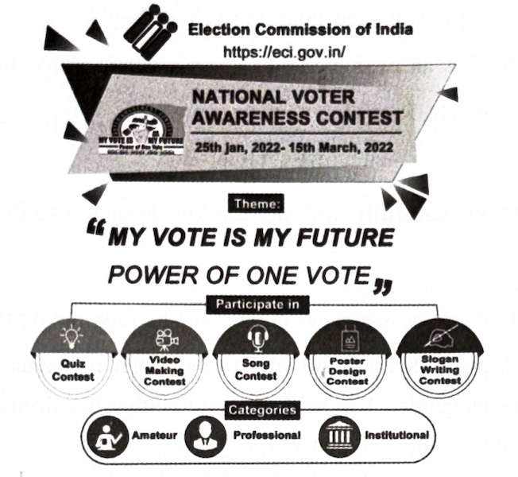
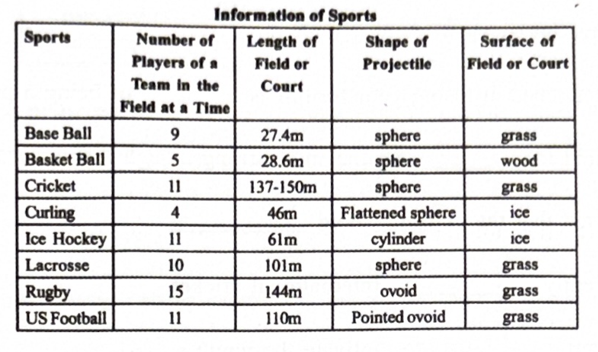
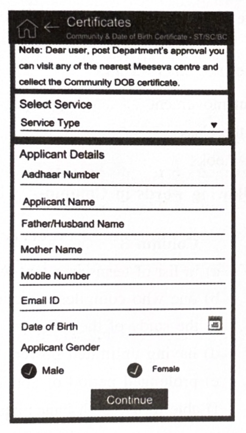

Time: 3 Hours
Max Marks: 80
1. Answer ANY TWO of the following questions in about 100 words each. (2 × 4 = 8)
a) How can we prevent developing a dogmatic attitude as per Russell’s suggestions?
b) When the movement was actually started, women were everywhere at the forefront – Elaborate.
c) How did Dr. Vasudevan experiment with plastic waste and what has been the result?
2. Answer ANY TWO of the following questions in about 100 words each. (2 × 4 = 8)
a) What is the central idea of the poem Fear?
b) How does the speaker describe Miss Pushpa in the poem?
c) According to Keats, when does one hear a cricket’s song?
3. Answer ANY TWO of the following questions in about 100 words each. (2 × 4 = 8)
a) Describe the character of Arun, the boarding school boy.
b) “A Gift for Christmas” is an example of O. Henry’s comic irony. Justify.
c) Sketch the character of Dr. Raman.
4. Read the following passage carefully and answer ANY FOUR questions given after it in a word or a sentence each. (4 × 1 = 4)
I was going to refuse out of shyness and suspicion, but she took me by the hand. Then I felt it would be silly to pull my hand away. She told a porter to look after my suitcase and then she led me down the platform. Her hand was gentle. She held my hand neither too firmly nor too lightly. I looked up at her again. She was not young, but she was not old.
Questions:
i) Name the short story from which this passage is taken.
ii) What was Arun going to do?
iii) How did she take his hand?
iv) How did Arun feel about taking back his hand?
v) What did she tell the porter?
vi) Pick out the word from the passage which means “tender”.
5. Read the following passage carefully and answer ANY FOUR questions given after it in a word or a sentence each. (4 × 1 = 4)
Pencil seems to be little but teaches SIX great lessons of life. Surprising? See how? (i) The pencil suffers a little when we use a sharpener but afterwards, it is much sharper. So, let’s learn to bear certain pains and sorrows because they will make us better persons. (ii) It allows us to use an eraser to rub out mistakes. This means correcting something we did is not necessarily a bad thing; it helps us to keep on the right path. (iii) What really matters in it is not its wooden exterior, but the graphite inside. So, let’s always pay attention to what is happening inside us. (iv) It always leaves a mark. In just the same way, everything we do in life will leave a mark. (v) It gets shorter and shorter with use. So does life. Let’s make the most of it while it lasts. (vi) It writes till the end. Let’s try to be useful and productive till the end.
Questions:
i) We stop writing with a pencil now and then. Why?
ii) What is the result of bearing pains and sorrows?
iii) Is correcting something we did a bad thing?
iv) What matters most in a pencil?
v) Why should we be conscious of every action of ours?
vi) We use the pencil till the end. Write true or false.
6. Study the advertisement given below and answer ANY FOUR questions given after it. (4 × 1 = 4)

i) What is the advertisement about?
ii) What is the theme of NVAC?
iii) Name any two areas in which the contest takes place.
iv) Who has issued this advertisement?
v) How many categories of participants can contest the competition?
vi) Write the antonym, from the advertisement, of the word “amateur”.
7. Read the following table below and answer ANY FOUR questions given after it. (4 × 1 = 4)

Sports Personnel in Different Disciplines
i) What does the table show?
ii) Which sport has the maximum number of players?
iii) How many coaches are there in football?
iv) Name the sport which has the least number of officials.
v) Write true or false: “There are 10 coaches for cricket.”
vi) Find the total number of players in all the games together.
8. Rewrite the following passage/sentence using EIGHT punctuation marks wherever necessary. (8 × ½ = 4)
i) this is my cousins car
ii) gandhiji led the non violent movement
iii) there are forty six boys in the class
iv) these are my father in laws books
9. Match ANY FOUR of the following words in Column–A with their meanings or definitions in Column–B. (4 × 1 = 4)
| Column A | Column B |
|---|---|
| i) etymology | (a) a list of terms in a text with explanation. |
| ii) omnipotent | (b) one who compiles a dictionary. |
| iii) ambidextrous | (c) the study of the origin of words. |
| iv) drought | (d) having unlimited power. |
| v) lexicographer | (e) prolonged period of abnormally low rainfall. |
| vi) glossary | (f) able to use both hands equally well. |
10. Fill in ANY FOUR blanks in the following sentences with suitable idiomatic expressions given below. Make necessary changes in the idioms if needed. (4 × 1 = 4)
a hot potato, by fair means or foul, spill the beans, take the rap, leave no stone unturned, part and parcel
1) They never gave up trying to recover their property _______.
2) Don’t get disheartened at losing your form. It is a _______ of being a professional.
3) She was prepared to _______ for the shoplifting though it was her sister’s idea.
4) They were scared that the culprit would _______.
5) Racism is currently _______ in International cricket.
6) Dr. Abdul Kalam _______ to motivate the youth.
11. Make FOUR meaningful sentences based on the verb patterns given below. An example is given as a model. (4 × 1 = 4)
| Subject | Transitive Verb | Indirect Object | Direct Object |
|---|---|---|---|
| Hethi | told | us | a story |
12. Fill in ANY EIGHT blanks of the given form based on the information furnished below. (8 × ½ = 4)
You are Mr. Srinivas, staying at Vidyanagar, Adilabad. You want to purchase some books from ‘Assorted Book Store’, Hanumankonda. Your Account number is 53410076148. Apply for a Demand Draft for Rs. 3,600/- today in favour of the book store payable at the SBI, Hanumankonda Main Branch. The exchange to be paid is Rs. 40/-.

13. Prepare a Curriculum Vitae/Resume/Bio-data in response to the following advertisement. (1 × 4 = 4)
14. Write a letter to the principal of your college requesting to issue your transfer, bonafide and conduct certificates as you completed your Intermediate course and you are about to join a medical college. (4 × 1 = 4)
OR
Write a letter to your younger sister explaining the importance of reading books.
15. Read the following passage and make notes. Add a suitable title. (1 × 4 = 4)
In December 2019, the novel Corona Virus called SARS-COV-2 had resulted in a respiratory illness called COVID-19. ‘CO’ stands for Corona, ‘VI’ for Virus, ‘D’ stands for Disease ‘19’ is the year in which it broke out. This virus was unknown before its outbreak in Wuhan in China, in December 2019. Corona Virus is a family of viruses that may cause disease in animals and humans. It causes respiratory infections ranging from the common cold to more severe diseases. India has approved seven vaccines. It’s currently using only three Vaccines — Covishield, Covaxin prepared by Bharath Biotech, and Sputnik V. While we are still learning how COVID-19 affects people, people with pre-existing medical conditions like high blood pressure, heart disease, lung disease, cancer etc., appear to bear greater risk than others.
We can reduce the chances of being infected with COVID-19 by taking simple precautions. We should clean our hands with sanitiser or wash them with soap water, because this action kills viruses on our hands. Everyone must maintain 6 feet distance from others. Once contaminated, hands can transfer the viruses to your eyes, nose or mouth, so avoid touching eyes, nose and mouth. Droplets of saliva spread the virus. So, the distance needs to be maintained. Good respiratory hygiene protects the people around you from viruses such as cold, flu, and COVID-19. Therefore, masks need to be worn.
16. Mark the stress for ANY EIGHT of the following words. (8 × ½ = 4)
i) employee ii) however iii) attend iv) around v) conduct
vi) begin vii) publicity viii) adopt ix) historical x) courageous
17. Write a dialogue between two friends regarding online classes during COVID. (4 × 1 = 4)
OR
As a student, you would like to open an account in the nearby State Bank of India. Write a conversation between you and an SBI bank manager about opening a savings bank account.
*****